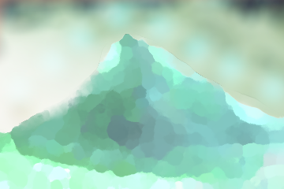

Позвольте прогрессу катиться каждый момент! Только у меня на сайте лучший весенний снег этого года!
Мудрость нежных сов, созидание всего мира, добрая весть для вас. А на душе станет веселее. Благородный витязь, по меню пройдитесь!
На этом сайте всем благородным витязям рады одинаково!
